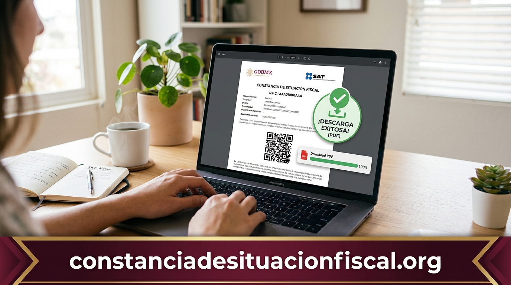
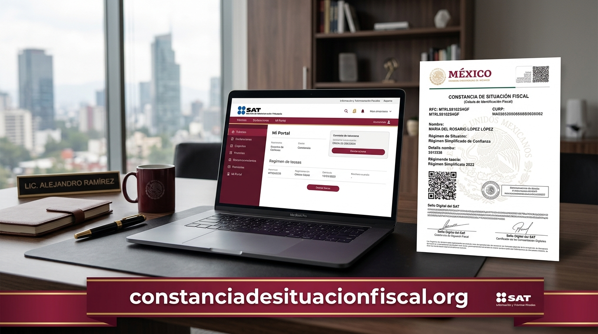
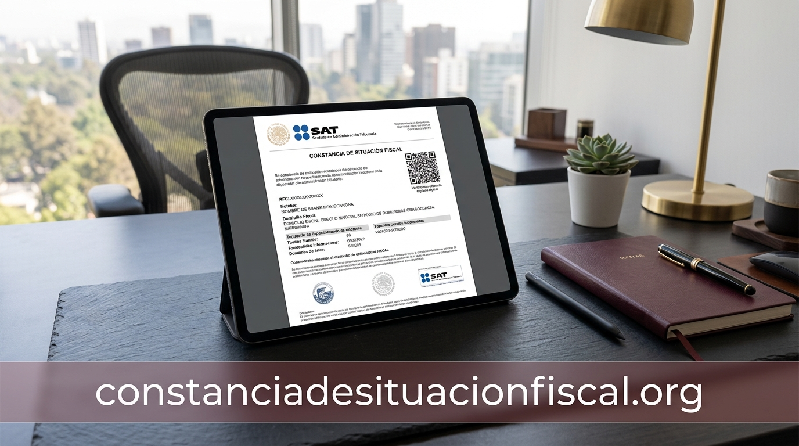

¿Qué es la Constancia de Situación Fiscal y por qué todos los contribuyentes la necesitan?
En el ecosistema tributario de México, la Constancia de Situación Fiscal (CSF) se ha consolidado como el documento de identidad hacendaria más relevante tanto para ciudadanos en relación de subordinación laboral como para personas físicas con actividad empresarial y personas morales. Emitida directamente por el Servicio de Administración Tributaria (SAT), esta constancia funciona como una radiografía fidedigna de tu estatus tributario frente a las leyes fiscales vigentes.
A diferencia de una simple tarjeta de registro o la tradicional cédula RFC expedida en papel, este documento digital integra en una estructura formal todos los identificadores que acreditan tu existencia como pagador de impuestos. Al consultar o solicitar tu constancia de situacion fiscal, obtienes un archivo PDF sellado digitalmente que incluye una cadena original del SAT y un código QR bidimensional que permite su validación en tiempo real en los servidores de la autoridad hacendaria.
¿Qué datos específicos contiene este documento?
Identidad del Contribuyente
Nombre completo, Clave Única de Registro de Población (CURP) y Registro Federal de Contribuyentes (RFC) con homoclave.
Domicilio Fiscal Registrado
Código postal vigente, entidad federativa, municipio o alcaldía, calle, número exterior y colonia formalmente declarada.
Régimen y Obligaciones
Régimen tributario en el que tributas (Sueldos y Salarios, RESICO, Actividad Empresarial, etc.) y fecha de inicio de actividades.
¿Para qué sirve realmente la Constancia de Situación Fiscal en trámites cotidianos?
Durante años, el RFC en una tarjeta plástica o en una copia simple era suficiente para abrir cuentas bancarias o solicitar empleo. Sin embargo, la modernización de los sistemas de recaudación y auditoría electrónica en México transformó por completo este panorama. Hoy en día, prácticamente cualquier entidad formal requiere la constancia expedida para respaldar transacciones mercantiles, laborales y bancarias.
Si te preguntas en qué situaciones específicas te solicitarán este documento, los escenarios más comunes incluyen:
- Ingreso a un nuevo empleo: El departamento de recursos humanos debe timbrar tus nóminas quincenales o mensuales bajo los estándares del Comprobante Fiscal Digital por Internet (CFDI). Sin los datos exactos de tu constancia, el sistema de facturación rechazará el timbrado.
- Apertura de créditos bancarios e inversiones: Las instituciones financieras reguladas por la Comisión Nacional Bancaria y de Valores (CNBV) cotejan tu situación fiscal para cumplir con normativas de prevención de lavado de dinero y validación de retenciones de ISR por rendimientos.
- Contratación de servicios profesionales y freelance: Si cobras honorarios o comercializas bienes, tus clientes necesitarán los datos fiscales actualizados para emitirte las retenciones pertinentes y deducir los pagos efectuados.
- Trámites notariales y de bienes raíces: Para la compraventa de propiedades o constitución de sociedades mercantiles, los notarios públicos exigen invariablemente la constancia con una vigencia no mayor a 30 o 90 días.
¿Por qué la reforma del CFDI 4.0 convirtió a la constancia en un documento imprescindible?
El verdadero detonante de la masiva demanda de este trámite fiscal en todo el territorio mexicano fue la entrada en vigor obligatoria de la versión 4.0 de la factura electrónica (CFDI). Hasta versiones anteriores (como la 3.3), los proveedores y empleadores podían facturar utilizando únicamente la clave del RFC, prescindiendo del nombre exacto o del código postal registrado en el padrón tributario.
Con las reformas al Código Fiscal de la Federación (CFF), el SAT implementó un validador algorítmico estricto. Actualmente, para que una factura o recibo de nómina sea legalmente válido, los siguientes 4 campos deben coincidir al 100% carácter por carácter con la base de datos del SAT:
RFC con Homoclave
Clave alfanumérica única de 13 dígitos para personas físicas o 12 para personas morales.
Nombre o Razón Social Exacta
Escrito en mayúsculas, sin abreviaturas, sin títulos profesionales y en personas morales sin el régimen de capital (por ejemplo, omitiendo 'S.A. de C.V.').
Código Postal del Domicilio Fiscal
Los 5 dígitos del código postal donde el contribuyente declaró su domicilio ante el SAT. Si te mudaste y no actualizaste tu domicilio, el código postal sigue siendo el anterior.
Régimen Fiscal Correspondiente
La clave numérica de régimen asignada (como 605 para Sueldos y Salarios o 626 para Régimen Simplificado de Confianza).

Cualquier discrepancia ortográfica (como un espacio adicional o un error en el código postal) genera el error inmediato de validación fiscal: "El campo Nombre del receptor no coincide con el registrado en el RFC" o "El campo DomicilioFiscalReceptor no pertenece al contribuyente". Por esta razón, empleadores y comercios piden la constancia física o en PDF: no por capricho administrativo, sino para evitar el rechazo total del timbrado digital.
¿Cómo sacar la Constancia de Situación Fiscal utilizando únicamente tu CURP?
Uno de los mayores dolores de cabeza para los contribuyentes en México ha sido la falta de contraseñas de acceso o citas presenciales en las Administraciones Desconcentradas de Servicios al Contribuyente (ADSC). Históricamente, perder la contraseña CIEC o no contar con los archivos de la firma electrónica (e.firma) significaba pasar semanas esperando un turno presencial en la plataforma de Fila Virtual.
Consciente de esta saturación, el SAT habilitó y perfeccionó canales alternativos para personas físicas que permiten la descarga inmediata de la Cédula de Datos Fiscales o la constancia completa empleando únicamente la Clave Única de Registro de Población (CURP) vinculada a un correo electrónico o mediante validación biométrica.
Paso a paso para la consulta directa con CURP:
- Acceso a la herramienta de Cédula de Datos Fiscales: Ingresa al portal oficial de servicios en línea del SAT y ubica el apartado de Cédula de Datos Fiscales sin contraseña.
- Captura de tu CURP: Digita los 18 caracteres de tu CURP oficial. Si no la conoces de memoria, puedes consultarla previamente y de forma gratuita en el portal oficial de RENAPO.
- Aceptación de términos y captura de captcha: Resuelve el mecanismo de seguridad visual para confirmar que la consulta es legítima y humana.
- Recepción del enlace de descarga: El sistema enviará de manera automatizada una liga cifrada temporal al correo electrónico que diste de alta en tu buzón tributario o en tu registro inicial ante el SAT.
- Descarga del documento en PDF: Abre el correo recibido, haz clic en el botón de confirmación y tu constancia oficial se abrirá lista para ser guardada en tu dispositivo.
¿Cuáles son los diferentes métodos digitales disponibles para descargar el PDF?
Dependiendo de tus credenciales de seguridad tributaria, existen cuatro vías principales para generar tu constancia. Cada método ofrece ventajas según el nivel de urgencia y las herramientas tecnológicas con las que cuentes:

| Método de Acceso | Requisitos Técnicos | Tiempo Estimado | ¿Requiere Cita? |
|---|---|---|---|
| Portal SAT Web (Tradicional) | RFC + Contraseña CIEC o e.firma (.cer / .key) | 2 a 3 minutos | No |
| SAT Móvil (App Android / iOS) | RFC + Contraseña y teléfono inteligente | 1 a 2 minutos | No |
| SAT ID (Plataforma Remota) | Identificación oficial (INE/Pasaporte) + Video selfie | 3 a 5 días hábiles | No |
| Kioscos Tributarios de Autoservicio | Presencia física + Huella dactilar o RFC | 5 a 10 minutos | No requiere cita previa |
El truco del botón oculto en el navegador:
Muchos usuarios que ingresan con su RFC y contraseña en el portal tradicional se confunden porque al iniciar sesión ven únicamente una pantalla con campos de fechas vacíos y ningún botón aparente que diga "Descargar".
Este es un detalle recurrente de interfaz: debes desplazar la barra de desplazamiento horizontal inferior hacia la extrema derecha de la pantalla para visualizar el botón rectangular de color azul o gris titulado "Generar Constancia". Al pulsar sobre este botón, el sistema abrirá una ventana emergente (pop-up) con el PDF de tu constancia lista para guardar. Si tu navegador tiene bloqueadas las ventanas emergentes, deberás permitir los pop-ups de sat.gob.mx para que el documento pueda desplegarse.
¿Cómo tramitar tu constancia si perdiste tu contraseña o no tienes e.firma activa?
Si no recuerdas tu contraseña fiscal y tampoco tienes los archivos digitales de la firma electrónica, no entres en pánico. El SAT diseñó el aplicativo SAT ID específicamente para solucionar este problema de forma 100% remota sin necesidad de visitar una oficina física.

El procedimiento dentro de SAT ID comprende los siguientes pasos:
Ingreso y Selección de Trámite
Entra a satid.sat.gob.mx desde tu celular o computadora y elige la opción 'Constancia de Situación Fiscal con CIF' o 'Generación de Contraseña'.
Datos de Contacto y Documentación
Ingresa tu RFC de 13 posiciones, un correo electrónico activo y tu número celular personal. Sube una fotografía legible por ambos lados de tu credencial del INE o pasaporte vigente.
Grabación de la Frase Biométrica
El sistema te mostrará una frase aleatoria en pantalla (por ejemplo: "El sol brilla en la mañana"). Deberás grabar un video corto mirando a la cámara pronunciando claramente las palabras indicadas.
Firma en Pantalla y Folio de Seguimiento
Dibuja tu firma autógrafa en la pantalla táctil de tu dispositivo tal como aparece en tu identificación oficial y guarda el número de folio generado.
En un plazo promedio de 3 a 5 días hábiles, los asesores del SAT revisan manualmente la coincidencia del video biométrico con tu credencial del INE. Una vez aprobado, recibirás directamente en tu correo electrónico un enlace seguro para descargar tu constancia o para crear una contraseña alfanumérica nueva de 8 dígitos.
¿Cuáles son los errores más comunes al intentar generar la constancia en línea?
A pesar de las constantes mejoras tecnológicas en la infraestructura gubernamental, miles de contribuyentes se topan a diario con fallas técnicas. Conocer de antemano estos errores te ahorrará horas de frustración:
Bloqueador de Ventanas Emergentes
Es el error número uno. El botón "Generar Constancia" abre una pestaña pop-up. Si tu navegador bloquea pop-ups por defecto, parecerá que la página no responde.
Saturación del Servidor en Días Clave
Durante la temporada de Declaración Anual (marzo para empresas, abril para personas físicas), los servidores del SAT experimentan caídas por alta demanda.
Caché y Cookies Obsoletas
Los portales del SAT almacenan tokens de sesión que caducan. Si recibes pantallas en blanco o errores 500, borra la caché o usa una ventana de incógnito.
¿Cómo imprimir la constancia correctamente en formato físico oficial?
Cuando una institución financiera, un juzgado o un departamento de nómina te solicita entregar la constancia impresa en papel, es vital respetar las especificaciones formales del documento para que no sea rechazado en ventanilla:
- Utiliza Adobe Acrobat Reader: No imprimas el archivo directamente desde el visor web del navegador (como Chrome o Edge). Guarda primero el archivo PDF en tu equipo y ábrelo con un software lector especializado para evitar que los caracteres especiales o acentos se corrompan.
- Configuración de Papel y Márgenes: El documento está formateado en estándar Carta (Letter - 8.5 x 11 pulgadas). Selecciona en las propiedades de impresión la escala "Ajustar al área de impresión" o "Tamaño real" con márgenes estándar.
- Nitidez del Código QR: En la esquina inferior izquierda o en la primera página del documento se ubica el código QR que certifica la autenticidad del trámite. Asegúrate de imprimir con una resolución mínima de 300 DPI y verifica que el cartucho de tinta no deje líneas horizontales sobre el código, ya que cualquier lector óptico debe poder escanearlo sin error.
- Impresión en Blanco y Negro o Color: Para efectos legales, el SAT acepta plenamente las impresiones en escala de grises blanco y negro. No es obligatorio imprimir los logotipos de Hacienda en color guinda/verde.
Preguntas Frecuentes sobre la Constancia de Situación Fiscal (FAQ)
¿Necesitas consultar o verificar tu estatus fiscal hoy mismo?
Accede a las guías detalladas, tutoriales especializados para cada régimen tributario y enlaces directos al portal oficial en nuestro centro de recursos tributarios.
Visitar constanciadesituacionfiscal.org →